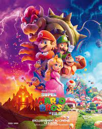
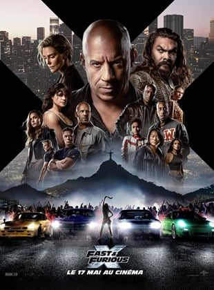
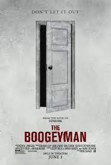

|  |
SUPER MARIO BROS. LE FILM |
06/04/2023 |
aventure/fantasy |
Un plombier nommé Mario parcourt un labyrinthe souterrain avec son frère, Luigi, essayant de sauver une princesse capturée. Adaptation cinématographique du célèbre jeu vidéo. |
1h32min |
|  |
Fast and Furious X |
17/05/2023 |
aventure/action |
Au cours de nombreuses missions et contre toute attente, Dom Toretto et sa famille ont déjoué et dépassé tous les ennemis sur leur chemin. Maintenant, ils doivent affronter l'adversaire le plus mortel qu'ils aient jamais affronté. |
2h21min |
|  |
Le croque mitaine |
31/05/2023 |
Horreur/Film à enigme |
Encore sous le choc de la mort tragique de leur mère, Sadie, une adolescente, et sa petite sœur Sawyer, se retrouvent en proie à une dangereuse et terrifiante présence maléfique dans leur maison. Elles vont tenter de lutter en essayant de compter sur l'aide de leur père Will, encore très marqué par le décès de sa femme. |
1h38min |